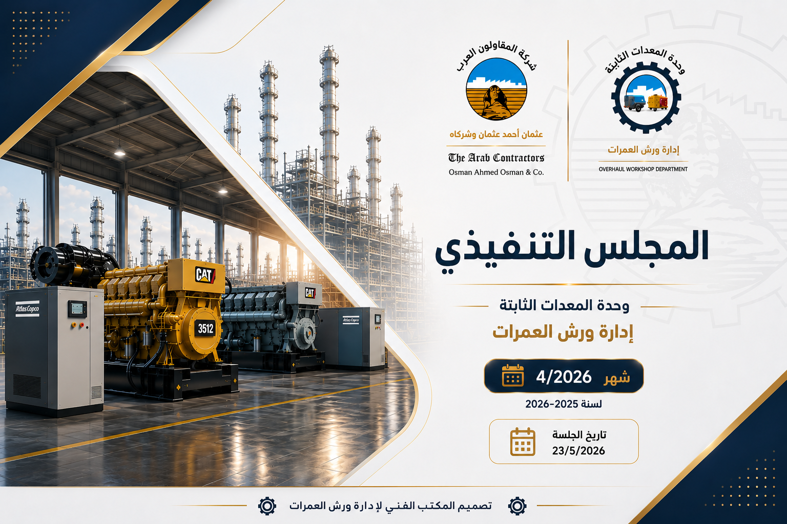
بيان عددي بالمعدات العاملة والعاطلة
لوحة إحصائية وجداول تفصيلية للعاملة والمعطلة والتكهين
التمويلات المحولة من إدارات وفروع الشركة لزوم الإصلاحات
تحليل الإيرادات والربحية للفترات المالية والقطاعات
من 01-07-2025 حتى 30-09-2025
من 01-10-2025 حتى 31-12-2025
من 01-01-2026 حتى 31-03-2026 بعد دمج إدارات أخرى
بيان تكلفة الإصلاح لوحدة المعدات الثابتة - الخطة الخامسة
بيان تكلفة الإصلاح لوحدة المعدات الثابتة - الخطة الخامسة
تقرير زيارات مخازن الصالحية وفرع مدينة نصر وموقف المعدات
إدارة ترسانة المعصرة - قبل وبعد الإصلاح
بيان اختبارات التشغيل والتحميل بعد الإصلاح
الصورة الختامية للتقرير
إجمالي الصفحات: 25 صفحة (تشمل الغلاف والفهرس)
نسب التشغيل والأعطال ومواقع التواجد الفعلي للكمبروسرات
| م | كود المعدة ↑ | ماركة المعدة | القدرة | الجهة المتعاقد معها | مكان التواجد الفعلي | سنة الصنع | الحالة | ملاحظات التشغيل |
|---|---|---|---|---|---|---|---|---|
| 1 | 16/01/169 | ATLAS COPCO | 10 BAR | شرق و وسط الدلتا | مشروع غزل المحلة | 1997 | تعمل | |
| 2 | 16/01/192 | ATLAS COPCO | 10 BAR | فرع الاسكندرية | ميناء ابو قير | 1998 | تعمل | |
| 3 | 16/01/201 | ATLAS COPCO | 7 BAR | ادارة الكبارى | مشروعات ادفو | 1999 | تعمل | |
| 4 | 16/01/211 | INGERSOLL RAND | 6 BAR | فرع سيناء | ورش ديوتس | 2000 | تعمل | |
| 5 | 16/01/765 | COMPAIR | 10 BAR | ادارة الانفاق | ادارة الانفاق | 1992 | تعمل | |
| 6 | 16/01/774 | INGERSOLL RAND | 10 BAR | ادارة الكبارى | مراغة | 1993 | تعمل | |
| 7 | 16/01/786 | INGERSOLL RAND | 10 BAR | فرع مدينة نصر | فرع مدينة نصر | 1994 | تعمل | |
| 8 | 16/01/790 | ATLAS COPCO | 21 BAR | فرع اسيوط | فرع اسيوط | 1997 | تعمل | |
| 9 | 16/01/834 | SULLAIR | 7 BAR | ادارة الكبارى | القطار السريع | 2003 | تعمل | |
| 10 | 16/01/847 | ATLAS COPCO | 7 BAR | فرع مدينة نصر | القطار السريع | 2009 | تعمل | |
| 11 | 16/01/851 | ATLAS COPCO | 11 BAR | صيانة القصور | كلية الهندسة الاسكندرية | 2009 | تعمل | |
| 12 | 16/01/854 | INGERSOLL RAND | 10 BAR | فرع القاهرة | القطار السريع | 2008 | تعمل | |
| 13 | 16/01/855 | INGERSOLL RAND | 10 BAR | صيانة القصور | صيانة القصور | 2008 | تعمل | |
| 14 | 16/01/865 | COMPAIR | 10 BAR | فرع الاسكندرية | مشروع العالمين | 2009 | تعمل | |
| 15 | 16/01/871 | COMPAIR | 11 BAR | فرع شمال الدلتا | مشروع تطوير لسان راس البر | 2009 | تعمل | |
| 16 | 16/01/883 | ATLAS COPCO | 11 BAR | فرع شمال الدلتا | مشروعات دمياط | 2010 | تعمل | |
| 17 | 16/01/884 | ATLAS COPCO | 10 BAR | فرع سيناء | قناه السويس | 2010 | تعمل |
| م | كود المعدة ↑ | ماركة المعدة | القدرة | الجهة المتعاقد معها | مكان التواجد الفعلي | سنة الصنع | الحالة | ملاحظات التشغيل |
|---|---|---|---|---|---|---|---|---|
| 18 | 16/01/885 | ATLAS COPCO | 7 BAR | تاجير المعدات | قناة السويس | 2008 | تعمل | |
| 19 | 16/01/891 | ATLAS COPCO | 11 BAR | فرع جنوب الوادى | مشروعات ادفو | 2011 | تعمل | |
| 20 | 16/01/892 | ATLAS COPCO | 10 BAR | صيانة القصور | كلية الهندسة الاسكندرية | 2011 | تعمل | |
| 21 | 16/01/897 | ATLAS COPCO | 7 BAR | فرع القناه | مشروعات السويس | 2002 | تعمل | |
| 22 | 16/01/899 | ATLAS COPCO | 7 BAR | ادارة الكبارى | وحدة الاصلاح | 2015 | تعمل | |
| 23 | 16/01/903 | COMPAIR | 10 BAR | فرع مدينة نصر | محكمة النقض | 2018 | تعمل | |
| 24 | 16/01/904 | COMPAIR | 21 BAR | ادارة الكبارى | الضبعة | 2019 | تعمل | |
| 25 | 16/01/905 | COMPAIR | 10 BAR | فرع حلوان | بشتيل | 2019 | تعمل | |
| 26 | 16/01/906 | COMPAIR | 10 BAR | صيانة القصور | صيانة القصور | 2019 | تعمل | |
| 27 | 16/01/908 | DOOSAN | 7.5 BAR | فرع الاسكندرية | الضبعة | 2019 | تعمل | |
| 28 | 16/01/909 | COMPAIR | 7.5 BAR | فرع الاسكندرية | الضبعة | 2020 | تعمل | |
| 29 | 16/01/919 | COMPAIR | 7 BAR | فرع الاسكندرية | الضبعة | 2021 | تعمل | |
| 30 | 16/01/923 | COMPAIR | 7 BAR | ادارة الكبارى | ورش الكبارى | 2021 | تعمل | |
| 31 | 16/01/924 | COMPAIR | 7 BAR | ادارة الكبارى | وحدة الاصلاح | 2021 | تعمل | |
| 32 | 16/01/925 | ATLAS COPCO | 7 BAR | الخط الرابع | الخط الرابع | 2021 | تعمل | |
| 33 | 16/01/926 | ATLAS COPCO | 7 BAR | الخط الرابع | الخط الرابع | 2021 | تعمل |
سجل تفصيلي يوضح حالة العطل وتاريخه
| م | كود المعدة ↑ | ماركة المعدة | القدرة | الجهة المتعاقد معها | مكان التواجد الفعلي | سنة الصنع | حالة المعدة - نوع العطل الفني التفصيلي | تاريخ العطل |
|---|---|---|---|---|---|---|---|---|
| 1 | 16/01/47 | ATLAS COPCO | 7 BAR | ترسانة المعصرة | ترسانة المعصرة | 1980 | معطل ( تجديد شامل ) | ـــــــــــ |
| 2 | 16/01/109 | ATLAS COPCO | 7 BAR | ادارة الانشاءات البحرية | المخازن الرئيسية بالعاشر | 1982 | معطل ( عمرة محرك + عمرة وحدة ) | ـــــــــــ |
| 3 | 16/01/164 | ATLAS COPCO | 7 BAR | ادارة الكبارى | موقع الكباري | 1997 | معطل ( عمرة محرك ) | ـــــــــــ |
| 4 | 16/01/180 | ATLAS COPCO | 8 BAR | المنشاءات المتميزة | مخازن الكيلو 35 | 2005 | معطل ( عمرة محرك ) | ـــــــــــ |
| 5 | 16/01/772 | INGERSOLL RAND | 22 BAR | فرع جنوب الوادى | فرع جنوب الوادى | 1993 | معطل ( تجديد شامل ) | ـــــــــــ |
| 6 | 16/01/791 | ATLAS COPCO | 10 BAR | المشروعات طموه | ورش العمرات | 1998 | معطل الميكانيكا والكهرباء | 2024-12-07 |
| 7 | 16/01/800 | ATLAS COPCO | 10 BAR | شرق و وسط الدلتا | ورش العمرات | 2000 | معطل ( عمرة محرك ) | 2024-08-20 |
| 8 | 16/01/816 | SULLAIR | 7 BAR | تاجير المعدات | ورش العمرات | 2005 | معطل ( عمرة محرك ) | 2026-03-09 |
| 9 | 16/01/817 | SULLAIR | 7 BAR | تاجير المعدات | ورش العمرات | 2005 | معطل ( عمرة محرك ) | 2026-05-07 |
| 10 | 16/01/821 | COMPAIR | 10 BAR | ادارة الانشاءات البحرية | ورش العمرات | 2005 | معطل ( عمرة محرك ) | 2024-11-06 |
| 11 | 16/01/857 | INGERSOLL RAND | 8 BAR | ادارة الانشاءات البحرية | ورش العمرات | 2009 | معطل ( خلط ماء بالزيت & تلف غرفة الرشاشات ) | 2025-12-18 |
| 12 | 16/01/868 | INGERSOLL RAND | 25 BAR | ادارة الانشاءات البحرية | وجه قبلى | 2009 | معطل ( وحدة كبس هواء ) | ـــــــــــ |
| 13 | 16/01/873 | ATLAS COPCO | 10 BAR | فرع حلوان | ورش فرع حلوان | 2010 | معطل ( عمرة محرك ) | ـــــــــــ |
| 14 | 16/01/879 | ATLAS COPCO | 7 BAR | المشروعات طموه | ورش العمرات | 2009 | معطل ( تلف وحدة ضغط الهواء + تلف فلتر فاصل الزيت + تلف خزان الزيت + تلف Key Start الخاص بالتشغيل + تلف فى دفيرة الكهرباء ) | 2026-04-28 |
| 15 | 16/01/898 | ATLAS COPCO | 7 BAR | الاساسات | ورش العمرات | 2009 | معطل ( عمرة محرك ) | 2025-03-20 |
| 16 | 16/01/900 | DOOSAN | 7.5 BAR | ادارة الكبارى | ورش الكبارى | 2018 | معطل ( وحدة ضاغط ) | ـــــــــــ |
| 17 | 16/01/901 | ATLAS COPCO | 7 BAR | ادارة الانشاءات البحرية | ورش الانشاءات البحرية | 2013 | معطل ( طلمبة ورشاشات ) | ـــــــــــ |
المعدات الغير مجدى اصلاحها ومطلوب تكهينها
| م | كود المعدة ↑ | ماركة المعدة | القدرة | الجهة المتعاقد معها | مكان التواجد الفعلي | سنة الصنع | الحالة | موقف خطابات اللجان والمالية والمخازن للتكهين |
|---|---|---|---|---|---|---|---|---|
| 1 | 16/01/126 | ATLAS COPCO | 9 BAR | المشروعات طموه | موقع طموه | 1982 | تكهين | معطل ( تحت التكهين الفني ) |
| 2 | 16/01/129 | ATLAS COPCO | 10 BAR | فرع الاسكندرية | فرع الاسكندرية | 1982 | تكهين | معطل ( تحت التكهين الفني المرفوع ) |
| 3 | 16/01/782 | INGERSOLL RAND | 11 BAR | ادارة الكبارى | موقع الكباري | 2009 | تكهين | إجراءات لجان التكهين |
| 4 | 16/01/806 | ATLAS COPCO | 7 BAR | ادارة الكبارى | موقع الكباري | 2003 | تكهين | إجراءات لجان التكهين |
| 5 | 16/01/824 | INGERSOLL RAND | 11 BAR | فرع الاسكندرية | ابيس | 2007 | تكهين | معطل ( تحت التكهين الفني ) |
| 6 | 16/01/845 | ATLAS COPCO | 11 BAR | ادارة الكبارى | مخازن الصالحية | 2011 | تكهين | معطل ( تحت التكهين ) وتم عمل خطاب للمالية لعمل صرف خارجى بتاريخ 30 / 4 / 2026 للتكهين |
| 7 | 16/01/850 | ATLAS COPCO | 11 BAR | فرع الاسكندرية | ورش الاسكندرية | 2009 | تكهين | معطل ( تحت التكهين الفني ) |
| 8 | 16/01/867 | COMPAIR | 11 BAR | فرع الاسكندرية | ورش الاسكندرية | 2009 | تكهين | معطل ( تحت التكهين الفني ) |
| 9 | 16/01/890 | ATLAS COPCO | 10 BAR | ادارة الكبارى | موقع الكباري | 2011 | تكهين | إجراءات لجان التكهين |
| 10 | 16/01/896 | ATLAS COPCO | 7 BAR | فرع القناه | ورش دويتس | 2002 | تكهين | معطل ( تحت التكهين الفني ) |
| 11 | 16/01/902 | ATLAS COPCO | 7 BAR | ادارة الانشاءات البحرية | ورش العمرات | 2013 | تكهين | معطل ( تحت التكهين الفني ) |
بيان قيمة التحويلات وتواريخها والأكواد الخاصة بالمعدات المطلوب إصلاحها
| م | الإدارة / الفرع | قيمة التحويل | تاريخ التحويل | لزوم إصلاح مولد / ك |
ملاحظات |
|---|---|---|---|---|---|
| 1 | ترسانة المعصرة | 78,000.00 | 26/01/15 | 669 / 2 / 27 | — |
| 2 | صيانة الآثار والقصور | 16,500.00 | 26/02/15 | 1502 / 2 / 207 | — |
| 3 | فرع مدينة نصر | 70,000.00 | 26/02/22 | 786 / 1 / 16 | — |
| 4 | فرع مدينة نصر | 23,000.00 | 26/02/24 | 903 / 1 / 16 | — |
| 5 | إدارة الأنفاق | 200,000.00 | 26/03/08 | 765 / 1 / 16 | — |
| 6 | ترسانة المعصرة | 230,000.00 | 26/02/09 | 1260 / 2 / 27 | — |
| الإجمالي | 617,500.00 | ||||
من 25/07/01 إلى 2025/09/30
| الشهر | تاريخ الاستحقاق | الإيراد |
|---|---|---|
| يوليو | 31-07-2025 | 10,269,532 |
| أغسطس | 31-08-2025 | 10,839,149 |
| سبتمبر | 30-09-2025 | 10,077,046 |
| الشهر | تاريخ الاستحقاق | الإيراد |
|---|---|---|
| يوليو | 31-07-2025 | 3,910,175 |
| أغسطس | 31-08-2025 | 3,841,123 |
| سبتمبر | 30-09-2025 | 3,848,755 |
| الشهر | تاريخ الاستحقاق | الإيراد |
|---|---|---|
| يوليو | 31-07-2025 | 697,785 |
| أغسطس | 31-08-2025 | 740,135 |
| سبتمبر | 30-09-2025 | 695,540 |
من 2025/10/01 إلى 2025/12/31
| الشهر | تاريخ الاستحقاق | الإيراد |
|---|---|---|
| أكتوبر | 31-10-2025 | 9,492,991 |
| نوفمبر | 30-11-2025 | 9,253,926 |
| ديسمبر | 31-12-2025 | 9,467,175 |
| الشهر | تاريخ الاستحقاق | الإيراد |
|---|---|---|
| أكتوبر | 31-10-2025 | 3,963,081 |
| نوفمبر | 30-11-2025 | 3,730,691 |
| ديسمبر | 31-12-2025 | 4,068,868 |
| الشهر | تاريخ الاستحقاق | الإيراد |
|---|---|---|
| أكتوبر | 31-10-2025 | 709,660 |
| نوفمبر | 30-11-2025 | 724,888 |
| ديسمبر | 31-12-2025 | 717,968 |
من 2026/01/01 إلى 2026/03/31 - بعد دمج بند إدارات أخرى داخل قطاع القاهرة الكبرى
| الشهر | قاهرة كبرى | إدارات أخرى | الإيراد بعد الدمج |
|---|---|---|---|
| يناير | 9,553,900 | 426,650 | 9,980,550 |
| فبراير | 8,688,325 | 384,950 | 9,073,275 |
| مارس | 7,308,768 | 385,100 | 7,693,868 |
| الشهر | تاريخ الاستحقاق | الإيراد |
|---|---|---|
| يناير | 31-01-2026 | 655,956 |
| فبراير | 28-02-2026 | 627,900 |
| مارس | 31-03-2026 | 676,650 |
| م | نوع المعدة | كود المعدة | القدرة | سنة الصنع | نوع المحرك | رقم التشغيل | الأعمال / موقف الإصلاح | ما تم صرفه بالجنيه |
التكلفة التقديرية |
تاريخ الدخول | تاريخ الخروج | الجهة القادم منها | ملاحظات |
|---|---|---|---|---|---|---|---|---|---|---|---|---|---|
| 1 | كمبروسر | 16 / 1 / 791 | 17 | 1998 | CATERPILLAR | 10189/4 | ضبط طلمبة ورشاشات | 252,500 | 400,000 | 24/07/12 | — | طموه | لم يتم التمويل تحت الإصلاح |
| 2 | كمبروسر | 16 / 1 / 816 | 7 | 2005 | SULLAIR | 10192/4 | عمرة محرك | 59,714 | 250,000 | 26/09/03 | — | تأجير المعدات | لم يتم التمويل تحت الإصلاح |
| 3 | كمبروسر | 16 / 1 / 857 | 8 | 2009 | INGERSOLL RAND | 10400/4 | وجود خلط ماء بالزيت ووجود تلف بغرفة الرشاشات | 20,764 | 200,000 | 18/12/2025 | — | الخط الرابع | لم يتم التمويل تحت الإصلاح |
| 4 | كمبروسر | 16 / 1 / 879 | 10 | 2009 | ATLAS COPCO | 10271/4 | تلف وحدة ضاغط + تلف بدائرة الهواء + تلف فلتر وعة الهواء + تلف خزان الزيت بالفاصل + عمرة محرك | 0 | 600,000 | 24/4/2026 | — | إدارة المشروعات | لم يتم التمويل تحت الإصلاح |
| 5 | كمبروسر | 16 / 1 / 873 | 10 | 2010 | ATLAS COPCO | 10064/7 | جاري الكشف والإصلاح | 0 | 300,000 | 14/5/2026 | — | حلوان | لم يتم التمويل تحت الإصلاح |
| الإجمالي | 332,978 | 1,750,000 | المطلوب استكمال تمويله: 1,417,022 جنيه | ||||||||||
| م | نوع المعدة | كود المعدة | القدرة | سنة الصنع | نوع المحرك | رقم التشغيل | الأعمال / موقف الإصلاح | ما تم صرفه بالجنيه |
التكلفة التقديرية |
تاريخ الدخول | تاريخ الخروج | الجهة القادم منها | ملاحظات |
|---|---|---|---|---|---|---|---|---|---|---|---|---|---|
| 1 | ماكينة توليد | 27 / 2 / 1164 | 150 | 2007 | OLYMPIAN | 10289/4 | تحت الاختبار والتجربة | 114,731 | 200,000 | 24/11/01 | — | ترسانة الاسماعيلية | لم يتم التمويل تحت الإصلاح |
| 2 | ماكينة توليد | 27 / 2 / 1407 | 200 | 2010 | STAMFORD | 10005/4 | عمرة رشاشات | 45,528 | 250,000 | 25/12/2023 | — | إدارة الكباري | لم يتم التمويل تحت الإصلاح |
| 3 | ماكينة توليد | 27 / 2 / 1406 | 365 | 2010 | CATERPILLAR | 10229/4 | جاري شراء رشاشات + لواسيل كاتم مياه + جوان وش سلندر | 22,998 | 300,000 | 26/12/01 | — | مشروع المونوريل | لم يتم التمويل تحت الإصلاح |
| 4 | ماكينة توليد | 27 / 2 / 1057 | 60 | 1999 | IVECO | 10174/4 | سخونة بالمحرك | 191,798 | 275,000 | 25/03/06 | — | فرع الاسكندرية | لم يتم التمويل تحت الإصلاح |
| 5 | ماكينة توليد | 27 / 2 / 1286 | 300 | 2010 | STAMFORD | 10284/4 | كاتم محرك وعمل صيانة | 190,768 | 450,000 | 30/1/2024 | — | إدارة الكباري | لم يتم التمويل تحت الإصلاح |
| 6 | ماكينة توليد | 27 / 2 / 1437 | 100 | 2020 | HELWAN | 10037/4 | عمرة تم استخراج أمر توريد وانتظار قطع الغيار | 15,936 | 300,000 | 25/06/02 | — | مدينة نصر | لم يتم التمويل تحت الإصلاح |
| 7 | ماكينة توليد | 27 / 2 / 1397 | 100 | 2017 | STAMFORD | 10092/4 | جاري شراء محرك استيراد + شراء ريداتير | 54,658 | 320,000 | 22/1/2025 | — | فرع شرق ووسط | لم يتم التمويل تحت الإصلاح |
| الإجمالي | 636,417 | 2,095,000 | المطلوب استكمال تمويله: 1,458,583 جنيه | ||||||||||
تقرير زيارة مخازن الصالحية - إدارة الكباري لمتابعة الموقف الفني للمولدات والكمبروسرات
ملخص فني للمعدات التي تم حصرها أثناء زيارة مخازن الصالحية - إدارة الكباري
| م | كود المعدة | الموقف الفني المختصر |
|---|---|---|
| 1 | 1378 - 1388 - 1278 - 1208 - 1314 - 1301 - 1303 - 173 | عدد 8 مولدات بعالية بدون محركات ديزل / جنريتور فقط. |
| 2 | 27 / 2 / 1302 | مولد لا يوجد به محرك ولا يوجد به جنريتور كهرباء. |
| 3 | 27 / 2 / 730 | المولد كامل ولكن مفكك: رشاشات - طلمبة جاز. |
| م | كود المعدة | الموقف الفني المختصر |
|---|---|---|
| 1 | 16 / 1 / 782 | الكباسور عبارة عن كبينة فقط بدون محرك + وحدة. |
| 2 | 16 / 1 / 806 | الكمبروسر مفكك تماماً: محرك + وحدة، وملقاة داخل الكابينة. |
| 3 | 16 / 1 / 890 | الكمبروسر مفكك تماماً ولا يوجد محرك ديزل / وحدة فقط. |
| 4 | 16 / 1 / 845 | الكمبروسر مفكك تماماً ولا يوجد محرك ديزل / وحدة فقط. |
تقرير فني لمعدات وحدة المعدات الثابتة المتواجدة بمخازن بدر التابعة لفرع مدينة نصر
ملخص فني للمولدات المتواجدة بمخازن بدر التابعة لفرع مدينة نصر
| م | كود المعدة | القدرة | سنة الصنع | الموقف الفني الحالي |
|---|---|---|---|---|
| 1 | 27 / 2 / 2250 | 30 | 2009 | عمرة محرك - تجديد شامل للكابينة - شاشة - دائرة حماية - سلكونات. |
| 2 | 27 / 2 / 650 | 80 | 1982 | عمرة محرك - ردياتير كامل - ضفيرة كاملة - عدادات - دائرة حماية. |
| 3 | 27 / 2 / 1247 | 100 | 2009 | عمرة محرك - ردياتير كامل - ضفيرة كاملة - عدادات - دائرة حماية. |
| 4 | 27 / 2 / 2253 | 50 | 2010 | عمرة محرك - ردياتير كامل - ضفيرة كاملة - عدادات - دائرة حماية. |
| 5 | 27 / 2 / 2261 | 50 | 2009 | عمرة محرك - تجديد شامل للكابينة - شاشة - دائرة حماية - سلكونات. |
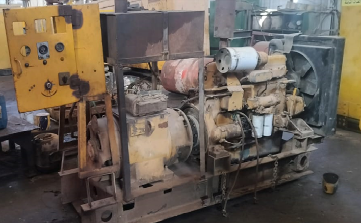
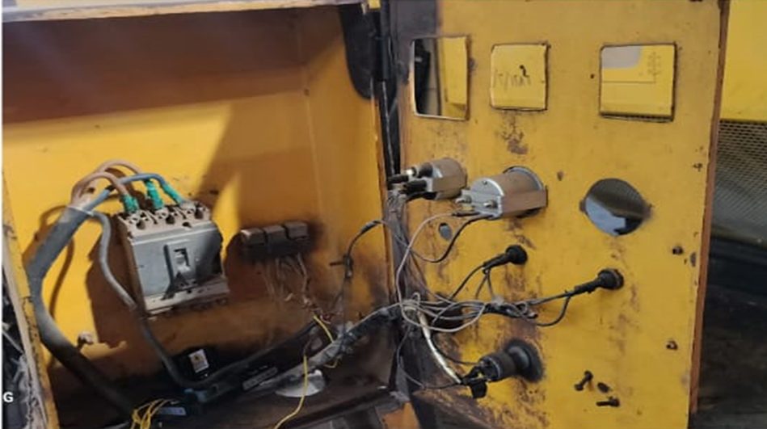
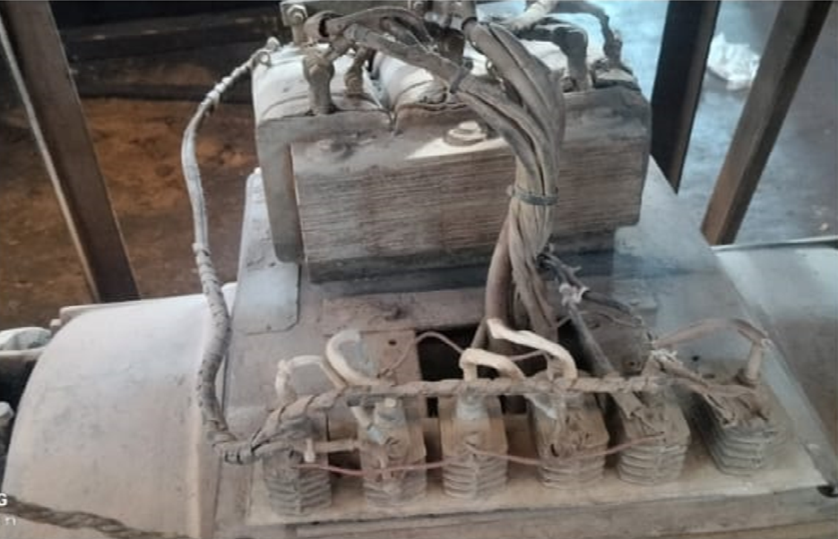
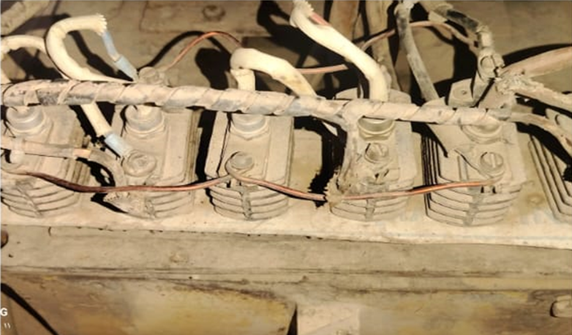
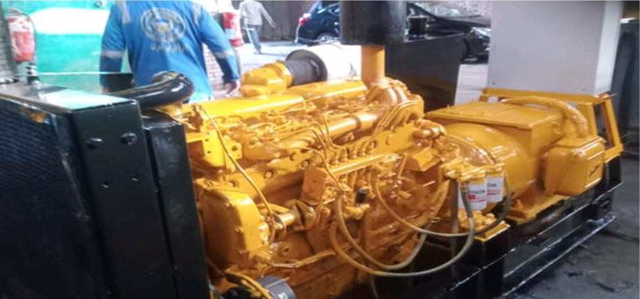
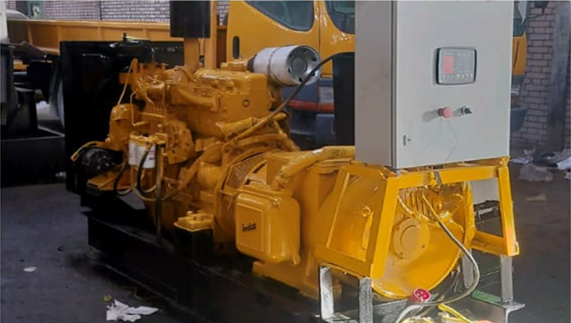
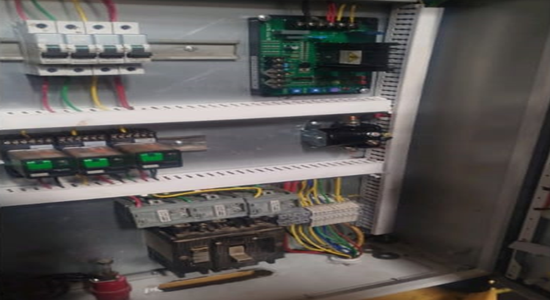
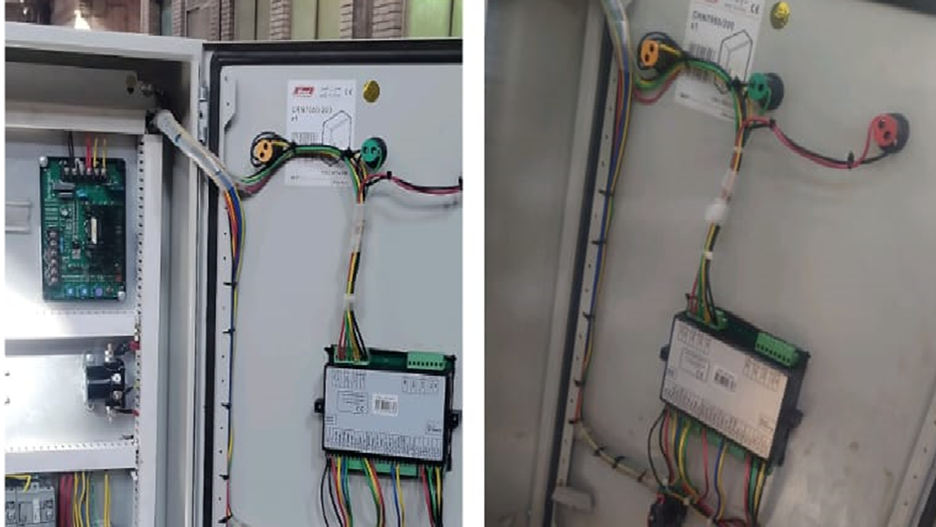
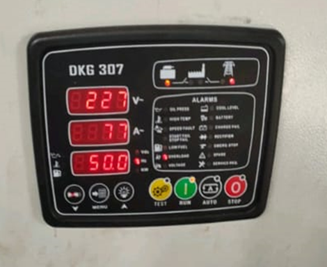
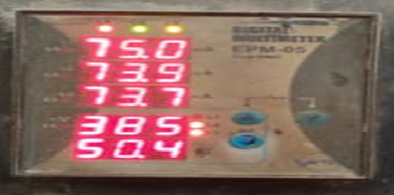